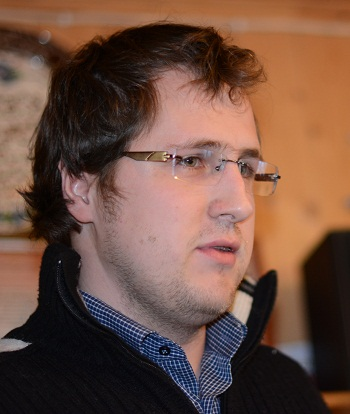

|
К. Юрков,
Рабочая партия России
Моменты становления
партии рабочего класса

В 2014 году исполняется 20 лет со дня регистрации в Министерстве Юстиции Фонда Рабочей Академии (Фонда содействия обучению рабочих). Несмотря на годы глубочайшей реакции, связанной с контрреволюционным восстановлением капитализма на территории бывшего СССР, все эти годы Фонд Рабочей Академии вел и ведет непрерывную марксистскую пропаганду и агитацию, как в рабочей среде, так и в среде интеллигенции. Регулярно ведутся занятия по изучению марксизма в Университете рабочих корреспондентов, являющиеся открытыми для всех без исключения граждан. На базе Фонда Рабочей Академии создан Красный Университет, являющийся по своей сути беспрецедентным событием в коммунистическом движении. Благодаря учреждению Красного Университета любой желающий в любой точке мира может изучать марксизм при поддержке высококвалифицированных преподавателей. Пользуясь обратной связью, организованной средствами интернета, слушатели могут задавать вопросы и получать помощь в разборе наиболее трудных положений. Достаточно сказать, что второй год проведения занятий Красного Университета дал расширение географии обучающихся до нескольких десятков городов России и зарубежья.
Без сомнения все перечисленное может быть по праву отнесено к одному из моментов становления действительной партии рабочего класса — коммунистической партии. Этот момент движения от ничто к бытию в становлении называется возникновением. Однако такое рассмотрение данного явления не было бы полным без указания на противоположный момент. На движение бытия в ничто — прехождение. Рассмотрение этого момента необходимо для всестороннего, диалектического понимания становления коммунистической партии.
Что же можно было бы отнести к такому прехождению? Надо сказать, что вся рассмотренная деятельность сегодня не встречает активного сопротивления со стороны буржуазии. Марксистская литература не изымается, кружки изучения марксизма не разгоняются, по сути только активная забастовочная деятельность вызывает сегодня резкое противодействие буржуазии, как наглядно показали события осенью этого года на ленинградском заводе «Антолин». Конечно, капиталисты ведут идеологическую борьбу, используя подконтрольные средства массовой информации от печатных изданий до телевизора. Однако в этой борьбе они разумно избегают прямого противостояния с пролетарской идеологией и делают вид, что последней просто не существует. Таким образом, идеологические атаки справа на коммунистов сегодня носят эпизодический характер.
Наиболее активной сегодня является троцкистская критика, ведущаяся будто бы с крайне левых позиций. Типичным признаком такой критики является “р�революционная” фраза, самовосхваление, отсутствие обсуждения по существу.
В этой связи поучительным будет разобрать выступление господина В. Новака в №42 газеты «Рабочий класс». Заметим, что ранее, в №37, Новак пытался сделать вид, что он ведет теоретическую дискуссию по поводу различных положений марксистской теории. Как мы увидим далее, эта видимость создавалась только для того, чтобы подготовить читателей к внедрению троцкистских идеологических установок. Отметим, что на большинство высказанных теоретических воззрений нами и нашими товарищами была дана подробная критика, здесь мы разберем лишь те приемы, которыми пользуется провокатор Новак.
Итак, начинает Новак с того, что смешивает в кучу и одновременно поливает грязью такие совершенно различные движения, как РКРП, КПГ, КПРФ и др. При этом автор не стесняется опускаться до прямой лжи вроде “отвержения идеи социалистической революции и революционных методов борьбы, отвержения диктатуры пролетариата во главе с рабочим классом”. Это утверждение верно для КПРФ, но любой, кто хочет разобраться в том, что представляют собой обсуждаемые партии, может убедиться, что и в программе КПГ и в программе РКРП имеется положение о диктатуре пролетариата и эти организации никогда от него не отказывались. Лишь провокатор может так нагло лгать на страницах печатного органа.
Что должен был сделать хоть сколько-нибудь непредвзятый критик? Взять конкретные положения той или иной организации, того или иного автора и обсуждать и критиковать именно эти положения. Новак в № 37 показал, что с теорией у него дело обстоит плохо, поэтому никаких конкретных положений критиковать он больше не берется. Единственный конкретный пункт, к которому цепляется Новак в данной статье,— это понятие диктатуры пролетариата. Вроде бы все здесь разжевано много раз, но и тут наш “теоретик” умудряется сесть в лужу. Противопоставляя два высказывания В.И. Ленина по поводу сущности диктатуры пролетариата, Новак относит “упорную борьбу, кровавую и бескровную, насильственную и мирную, военную и хозяйственную, педагогическую и администраторскую против сил и традиций старого общества” к “внешним формам проявления диктатуры пролетариата”. Дальше мы увидим, что диалектику Новак не изучал, различия между формой и сущностью не понимает, поэтому не знает элементарных вещей о том, что формой диктатуры пролетариата является Советская власть, избираемая по производственному принципу. Указанная же борьба, которую ведут городские, фабрично-заводские рабочие в ходе свержения ига капитала и в деле созидания нового, социалистического, общества вплоть до полного коммунизма, относится к сущности диктатуры пролетариата.
Несмотря на полный провал в части теории Новак заявляет, что необходимо развивать теоретическую работу. Никаких уточнений по поводу того, как развивать марксизм, критик не дает. Тут впору вспомнить перестроечный лозунг: “Мы ждем перемен”! О том, что перемены могут быть как к лучшему, так и к худшему, в перестроечном угаре многие забыли. Так и Новак не знает, что в развитии есть два противоположных момента — прогресс и регресс. История нас уже научила, что если кто-то призывает к развитию марксизма без всяких уточнений, то жди “экономной экономики”, “народного государства”, горбачевского “ускорения” и прочей антимарксистской чуши. Помня о том, какие “теоретические” положения высказывает Новак, нетрудно установить какой момент развития он выражает.
Дальше Новака не остановить и он уже не скрывает своих намерений. Предлагая изучать “не все огулом работы Ленина и Сталина, многотомие которых вряд ли кто-то способен сегодня полноценно освоить, а тематически строго отобранные в соответствии с требованием времени и интересами современного коммунистического движения”, автор скатывается до перестроечного антимарксизма. Ведь как изучали марксизм-ленинизм, начиная с хрущевского времени? Да именно так, как и предлагает Новак, — рассматривалось марксистское наследие не в целом, а по каждой теме достаточно было прочитать пару-тройку работ, а то и просто заучить несколько цитат. Такое изучение теории привело не просто к непониманию, а прямо к отрицанию марксизма.
То что Новак сам “огулом” не штудировал работы Ленина, становится очевидно, когда нападая на Красный Университет, он требует, чтобы были выложены тексты лекций, с непременным “изъятием семинаров типа — “Логические переходы категорий “бытие ”, “ничто”, “становление”, “ нечто ””. В «Философских тетрадях» Ленин особо останавливается на анализе этих переходов. Понимая всю сложность и важность материалистического истолкования гегелевской диалектики, он формулирует следующее: “Нельзя вполне понять «Капитала» Маркса и особенно его I главы, не проштудировав и не поняв всей Логики Гегеля. Следовательно, никто из марксистов не понял Маркса 1/2 века спустя!” (В. И. Ленин. ПСС. Т. 29. С. 162). А в работе “О значении воинствующего материализма”, которую можно рассматривать, как философское завещание Ленина, он указывает, что без диалектики невозможно устоять под натиском реакции и лжи, поэтому мы все должны стать своего рода “обществом материалистических друзей гегелевской диалектики”. Не правда ли, позиция Новака прямо противоположна по смыслу излагаемому Лениным?
Итак, выступив с провокаторской позиции против товарищей, которые многие годы занимаются пропагандой марксизма, Новак предлагает своих кандидатов “способных к аналитическим исследованиям и выводам”. Первой похвалы от критика заслужило объединение МОК и один из его представителей Н. Градов. По Новаку РКРП плоха, КПУ никуда не годится, Фонд Рабочей Академии — “умничающие самозванцы”, а вот МОК — структура, вызывающая одобрение. Для того, чтобы понять, что такое МОК, достаточно заглянуть в программу данной организации, которой, вообще говоря, не существует, а ее роль выполняют так называемое “программное заявление” и проект программы. Первый документ представляет собой набор благопожеланий, в нем мы не найдем ни слова о диктатуре пролетариата, второй же содержит грубейшие теоретические ошибки вроде выделения бюрократии в отдельный класс, так и пестрит давно пережеванными штампами вроде “прозрачной и честной системы выборов”. Завершает картину присутствие в руководящих органах МОК граждан, вроде Б.Ю.Кагарлицкого, выражающего троцкистские идеи. Вот такие организации милы сердцу Новака.
Кто же будет усиливать внимание к теоретической стороне пропаганды, кто те “исключительно особо подготовленные, доверенные и проверенные люди”, кто будет брать под “жесткий критический и идеологический контроль все без исключения издания, числящиеся сегодня коммунистическими и левыми”, кто будет отбирать работы Ленина и Сталина, дабы товарищи не читали “огульно” все наследие марксизма, кто будет создавать единый идеологический центр? А это и будет сам Новак. Ведь он “не побоится начать эту работу в одиночку”. Готовьтесь товарищи, Новак расскажет вам, как нужно изучать марксизм.
В целом можно сказать, что такое самовосхваление, поливание всех прогрессивных действий участников коммунистического движения, торжественные клятвы в марксизме, ничего общего с марксизмом не имеющие, все это является фирменным стилем провокаторов. Наша задача заключается не в том, чтобы выяснять, является ли Новак провокатором сознательным или просто недоучившимся двоечником. Главное научиться определять такие провокаторские выходки и давать им должный отпор. Ведь дискуссий с Новаком уже никто не ведет, просто вскрывается его провокаторская сущность.
В заключение отметим, что статьи Новака выходят на целых разворотах газеты «Рабочий класс». В связи с этим, мы хотели бы задать вопрос товарищам из Рабочей партии Украины, которые поддерживают выпуск данной газеты, а также товарищам, отвечающим за редакционную политику. Вы поддерживаете провокаторскую позицию Новака? Вам близки высказанные идеи и та форма, в которую они обличены? Очень хотелось бы получить ответы на эти вопросы.
НАЗАД
|